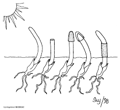

1 Conhecimento científico
O conhecimento científico basea-se em fatos, ou seja, na observação controlada e criteriosa de vários fenômenos, dessa forma, cientistas tentam entender se há relação entre esses fenômenos.
Esse capítulo traz temos importantes acerca do conhecimento científico, dessa forma: A seção 1.1 traz a definição e formas de construção do conhecimento científico; a segunda parte, seção 1.2, trata dos procedimentos lógicos a serem seguidos para realizar uma boa pesquisa; A seção 1.3 compara o conhecimento científico e a sabedoria popular; O próximo tópico (seção 1.4), demonstra a importância da divulgação dos resultados e experimentos científicos; A seção 1.5 trata do conhecimento científico aplicado às ciências da natureza e decreve três ramos importantes da mesma, sendo, a física, a química e a biologia; Por fim, a última parte deste capítulo (seção 1.6) traz exemplos de importantes experimentos realizados por cientistas renomados.
1.1 Definição de conhecimento científico
Primeiramente, devemos saber que existem diversas formas conhecimento, por exemplo: o religioso, o filosófico e o senso comum.
Nesse sentido, uma particularidade do conhecimento científico é que sua metodologia utiliza a lógica, ou seja, tudo deve fazer sentido e representar a realidade. Dessa forma, temos algumas características básicas do conhecimento científico: a razão, a empiria (experimentação) e o método.
Além dessas características, o conhecimento científico tem duas pretensões: Objetividade e neutralidade. Ambas estão relacionadas ao julgamento particular do cientista pesquisador.
Dessa forma, podemos conceituar o conhecimento científico como a sabedoria produzida por métodos racionais e lógicos com experimentação e comprovação. Em particular, o conhecimento científico aplicado às ciências sociais utiliza o comportamento da natureza para validar suas teorias.
Assista o vídeo abaixo para complementar seus estudos sobre esse conceito.
1.2 A metodologia do conhecimento científico
E o primeiro passo dessa metodologia consiste em termos um “palpite” sobre a ocorrência fato que se quer estudar, ou seja, formula-se uma hipótese. O construção do conhecimento científico geralmente começa com alguma pergunta: “Por que esse fenômeno ocorre?” ou “Qual a relação entre determinado fenômeno e outro?”. Quando os pesquisadores fazem essas perguntas, na maioria das vezes, eles já tem alguma ideia da resposta e querem comprová-la. Essa possível resposta é o que chamamos de hipótese (AMABIS et al., 2020).
Depois de formulada uma hipótese, a mesma deve ser testada rigorosamente. O teste de hipótese fornece ferramentas que nos permitem rejeitar ou não rejeitar uma hipótese. Ele consiste em imaginar uma situação em que determinados fatos e consequências ocorreriam somente se a hipótese testada fosse “verdadeira”. Dessa forma, o cientista pode fazer deduções e prever o que acontecerá em uma nova situação onde a hipótese também será verdadeira. Essa metodologia chama-se hipotético-dedutiva (AMABIS et al., 2020).
Segue um resumo das procedimentos adotados por cientistas para construção do saber científico (AMABIS et al., 2020):
Estabelecimento do problema a estudar;
Verificação do que se sabe previamente sobre o fenômeno;
Formulação de uma hipótese;
Levantamento de deduções com base na hipótese;
Teste das deduções;
Conclusão sobre a validade ou não da hipótese.
1.3 Conhecimento científico versus senso comum (sabedoria popular)
Vimos na seção 1.1 que o conhecimento científico precisa de observação, experimentação, razão, lógica e comprovação dos fatos para ser validado. Por outro lado, “O senso comum é um tipo de pensamento que não foi testado, verificado ou metodicamente analisado. Geralmente, o conhecimento de senso comum está presente em nosso cotidiano e é passado de geração a geração. Podemos afirmar que esse tipo de conhecimento é, categoricamente, popular e culturalmente aceito, o que não garante a sua validade ou invalidade.
O senso comum, por ser obtido a partir de um movimento de repetição cultural, pode estar correto ou não. Não é possível confiar nesse tipo de conhecimento como se confia na ciência, mas também não podemos invalidá-lo de imediato, pois o fato de não se estabelecer métodos e testes comprobatórios, não significa, necessariamente, que o tipo de conhecimento popular está errado (BRASIL ESCOLA, 2023a).
Veja mais sobre “senso comum” em:
1.4 Como os cientistas se comunicam?
Para que o conhecimento tenha o efeito desejado, ele deve ser amplamente divulgado e outros pesquisadores possam tentar reproduzí-lo, testá-lo e criticá-lo. Dessa maneira, teoria e hipótese devem ser publicadas em revistas científicas especializadas em formato de artigos. Tais revistas possuem corpo técnico qualicado para entender o estudo e aceitá-lo, caso esteja correto. A publicação dos resultados é imprescindível, pois dá credibilidade às informações levantadas, permitindo consulta e críticas (AMABIS et al., 2020).
Entre outros aspectos, as revistas científicas verificam:
- se o estudo é inédito (novo);
- se o assunto é relevante (importante);
- se o artigo tem metodologia adequada.
Artigos veiculados em jornais e revistas não especializadas não passam pela análise criteriosa para validação do conhecimento difundido. Nesse sentido, deve-se ter cuidado ao interpretar as informações, pois esse tipo de divulgação tem objetivo de popularizar o conhecimento científico.
1.5 Conhecimento Científico em Ciências Naturais
O termo “ciência” provém do latim scientia, que significa conhecimento. As leis científicas descrevem regularidades dos fenômenos naturais, ou seja, a ciência proporciona a previsão do acontecimentos da natureza.
As ciências naturais referem-se aos inúmeros ramos que se utilizam da metodologia científica para para estudar a natureza. Entre os vários ramos das ciências naturais, temos a física, a química e a biologia.
1.5.1 Física
A Física é o campo da ciência que investiga os fenômenos e as estruturas mais fundamentais da natureza, procurando sua compreensão e descrição em termos de leis mais gerais possíveis. Com essas leis, a Física estuda desde partículas sub-atômicas e sua estruturação em átomos e moléculas, até fenômenos que envolvem grandes aglomerados destes, como cristais, metais, polímeros, materiais amorfos, semi-condutores e super-condutores. Em uma escala maior essas leis são usadas para o estudo da Terra e dos fenômenos que ocorrem em sua atmosfera. Aumentando mais ainda a escala, essas mesmas leis permitem uma descrição do Sistema Solar, das estrelas e das galáxias bem como do Universo como um todo, além da criação de modelos para a sua evolução.
No processo de compreensão da natureza, as investigações físicas têm possibilitado o domínio de fenômenos naturais bem como a criação de materiais e sistemas artificiais que têm contribuído decisivamente para o avanço de outros campos da ciência e para o progresso tecnológico da humanidade (UFMG, 2023).
1.5.2 Química
A Química estuda as transformações que envolvem a matéria e a energia. “A Química é um ramo das Ciências da Natureza que estuda a matéria, suas propriedades, constituição, transformações e a energia envolvida nesses processos.
A Matéria é o principal objeto de estudo da Química e pode ser definida como tudo aquilo que ocupa lugar no espaço e tem massa, ou seja, todo o mundo material ao nosso redor e, inclusive, nós mesmos.
Independentemente do formato, origem (presente no nosso planeta ou no universo) ou se vivo ou morto, não existe nenhum material que esteja fora do alcance da Química.
A Química tem um enorme impacto sobre a tecnologia e a nossa sociedade, pois seus estudos desempenham um papel fundamental no desenvolvimento de todos os ramos das ciências. Afinal de contas, é por meio do estudo da matéria que podemos entender as propriedades e as possíveis transformações que cada substância pode sofrer para, então, usar esse conhecimento em nosso benefício.
É muito fácil perceber as diversas contribuições proporcionadas pela Química ao longo de toda a história da humanidade. Entre elas, podemos destacar (BRASIL ESCOLA, 2023b) :
O desenvolvimento dos alimentos industrializados;
O aumento do prazo de validade dos produtos;
O aumento da eficácia e ação dos cosméticos;
Desenvolvimento de medicações para combate às mais variadas doenças;
Desenvolvimento de fontes alternativas de combustíveis;
Produção de substâncias em laboratório;
Desenvolvimento de técnicas e soluções para problemas ambientais.”
Quer saber mais sobre: “O que é Química?”, clique aqui.
1.5.3 Biologia
O nome dessa ciência vem da junção de dois termos gregos: bio, que significa vida, e logos, que significa estudo. Assim sendo, dizemos que a Biologia é a ciência responsável por estudar a vida em todos os seus aspectos. Mas você deve estar se perguntando: O que seria a vida? E, afinal, que aspectos são esses estudados pela Biologia?
Por mais incrível que isso possa parecer, a primeira pergunta não é fácil de ser respondida, pois a vida não possui uma definição aceita por todos os cientistas. É muito difícil definir de maneira clara o que é a vida sem excluir alguns organismos claramente vivos. Até então, a grande maioria dos pesquisadores estabelece que um ser vivo é um organismo que apresenta metabolismo, reproduz-se e está sujeito aos processos evolutivos (BRASIL ESCOLA, 2023c).
Veja mais em: O que é biologia.
1.6 Exemplos de experimentos científicos
A seguir, vamos relatar dois importantes experimentos científicos em ciências naturais.
Experimento de Charles Darwin e Francis Darwin publicado em 1880;
Experimento de Karl Jansky publicado em 1930;
1.6.1 Os Experimentos de Charles e Francis Darwin
Pai e filho, Charles e Francis Darwin estudaram o comportamento de plantas onde as mesmas tendem a se direcionar para uma fonte de luz, seja ela, natural ou artificial.
A pergunta inicial da estudo seria: “Qual parte da planta é sensível à fonte de luz?”. Depois de várias observações, eles chegaram à hipótese de que a luz é percebida pela extremidade.
Para testar essa hipótese, os pesquisadores cortaram e eliminaram as extremidades superiores de algumas plantas jovens de alpiste a as colocaram perto de uma fonte direcionada de luz; ao lado das plantas cortadas, eles colocaram plantas intactas, que serviam como elementos de comparação (controle experimental). Alguns dias depois eles verificaram que as plantas instactas haviam crescido curvando-se em direção à luz, enquanto as plantas decapitadas continuaram a crescer eretas, sem se curvar.
Outra comparação foi realizada cobrindo a extremidade de algumas plantas de alpiste com sacos pretos à prova de luz, enquanto outra amostra de plantas de alpiste foi coberta em outras partes (caule, folhas, etc). O resultado verificado foi: As plantas com extremidades cobertas cresceram eretas, enquanto as outras cresceram se curvando para a fonte luminosa.
Dessa forma, a hipótese foi aceita, pois verificou-se que a luz é recebida pela parte superior do caule da planta (AMABIS et al., 2020).

1.6.2 Os Experimentos de Karl Jansky
Na década de 1930, as chamadas radiotelefônicas entre a América e a Europa apresentavam muito ruído. O engenheiro Karl Jansky foi contratado para resolver o problema.
Após observar o problema, o cientista percebeu que os ruídos apresentavam regularidade, ou seja, eles aumentavam em certo período do dia e quando havia tempestades, além disso, a fonte produtora do fenômeno se deslocava de leste a oeste.
Esses fatos, levaram Karl Jansky a crer que a fonte do ruído não estava no planeta Terra e, inicialmente supôs que a interferência vinha do sol.
Porém, após mais observações e experimentos, Jansky percebeu que o ruído não era provenientes do sol, mas sim, os ruídos vinham de estrelas localizadas no centro de nosso galáxia, a Via Láctea.
Os experimentos foram divulgados em publicações científicas, dessa forma, outros pesquisadores puderam ter acesso às informações e aprender mais com as descobertas.
1.7 Atividade
Caros alunos, agora chegou a hora de fixarmos o conhecimento adquirido com a leitura e visualização deste capítulo.
Para isto, clique aqui e responda o questionário on-line.